🏆
Inaugural Season Champions
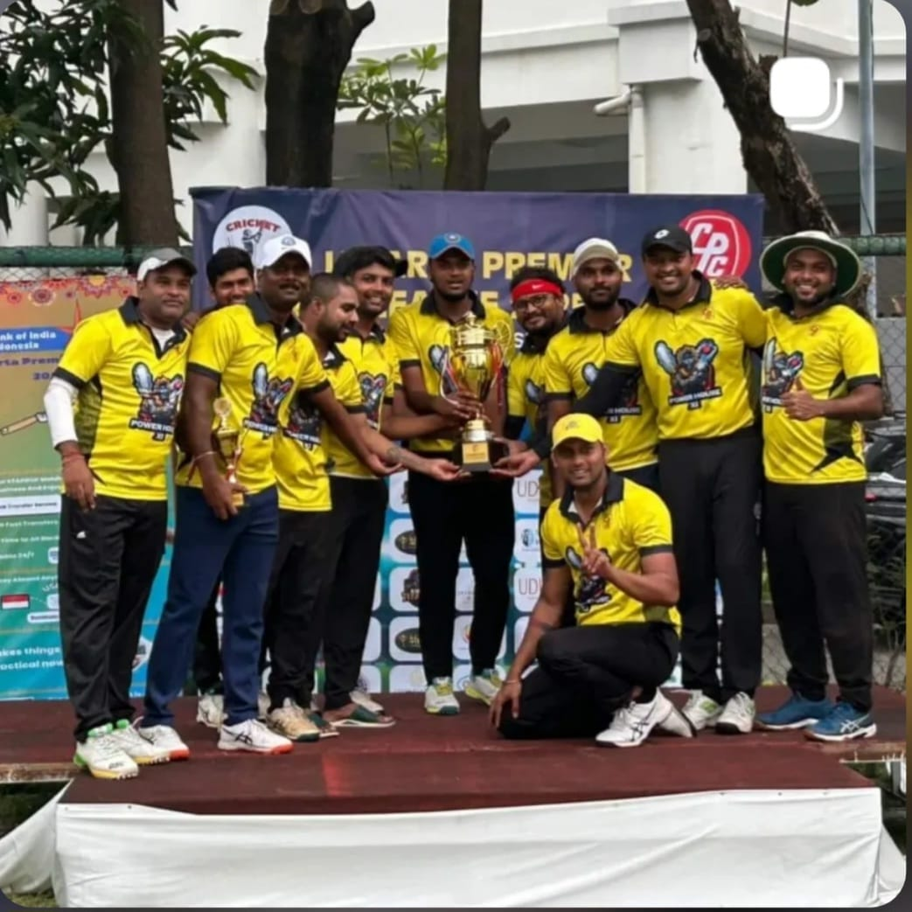
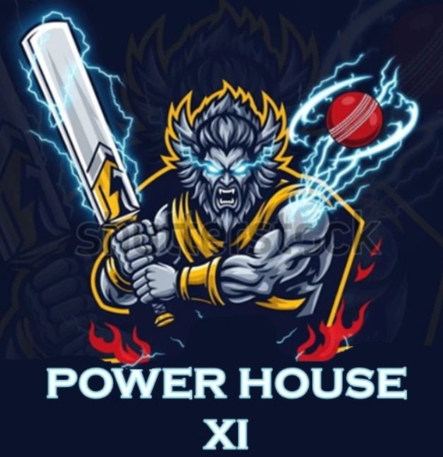
POWERHOUSE XI
Defeated Udupi Sunshine Cricket Club by 20 runs in the final.
Powered by Classic Carpets
Co-Powered by PT Platinumetrix Global Inovasi
The inaugural JPL tournament brought eight teams together for two days of tennis-ball cricket, competition and community in Jakarta.
The teams that reached the final of the inaugural JPL season.


Defeated Udupi Sunshine Cricket Club by 20 runs in the final.
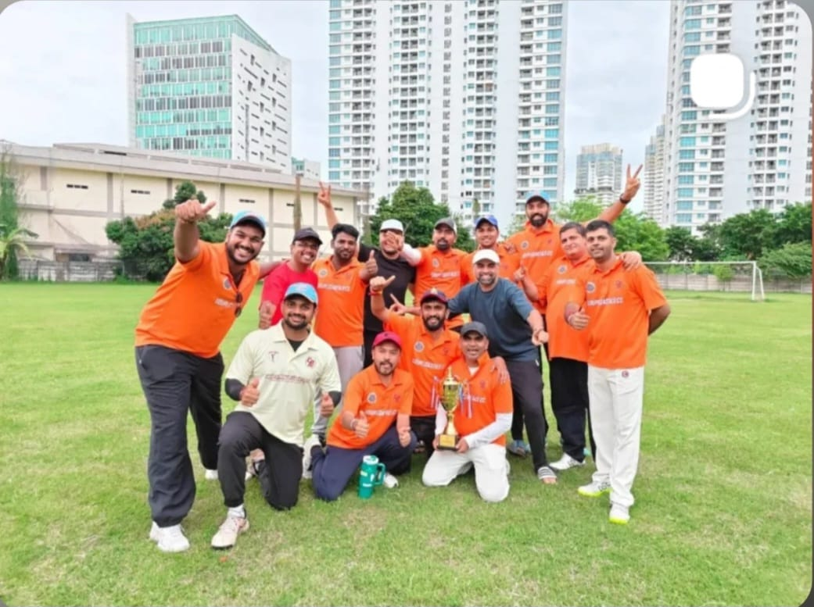
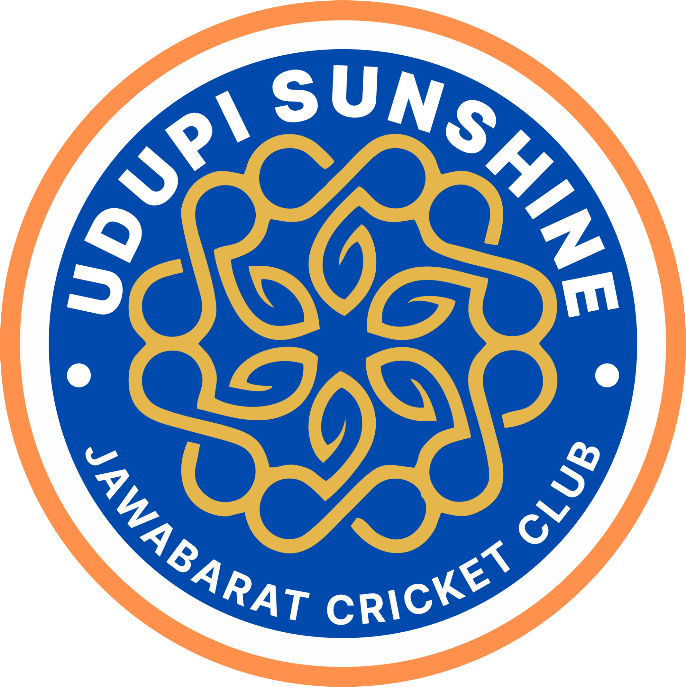
Finished as runners-up after a strong tournament campaign.
Jakarta Premier League launched its journey in December 2025, bringing cricket teams together at Gandhi School Ground, Kemayoran. Season 1 set the foundation for a growing community built around competition, teamwork and a shared love of cricket.

Eight teams competed in the inaugural Jakarta Premier League.
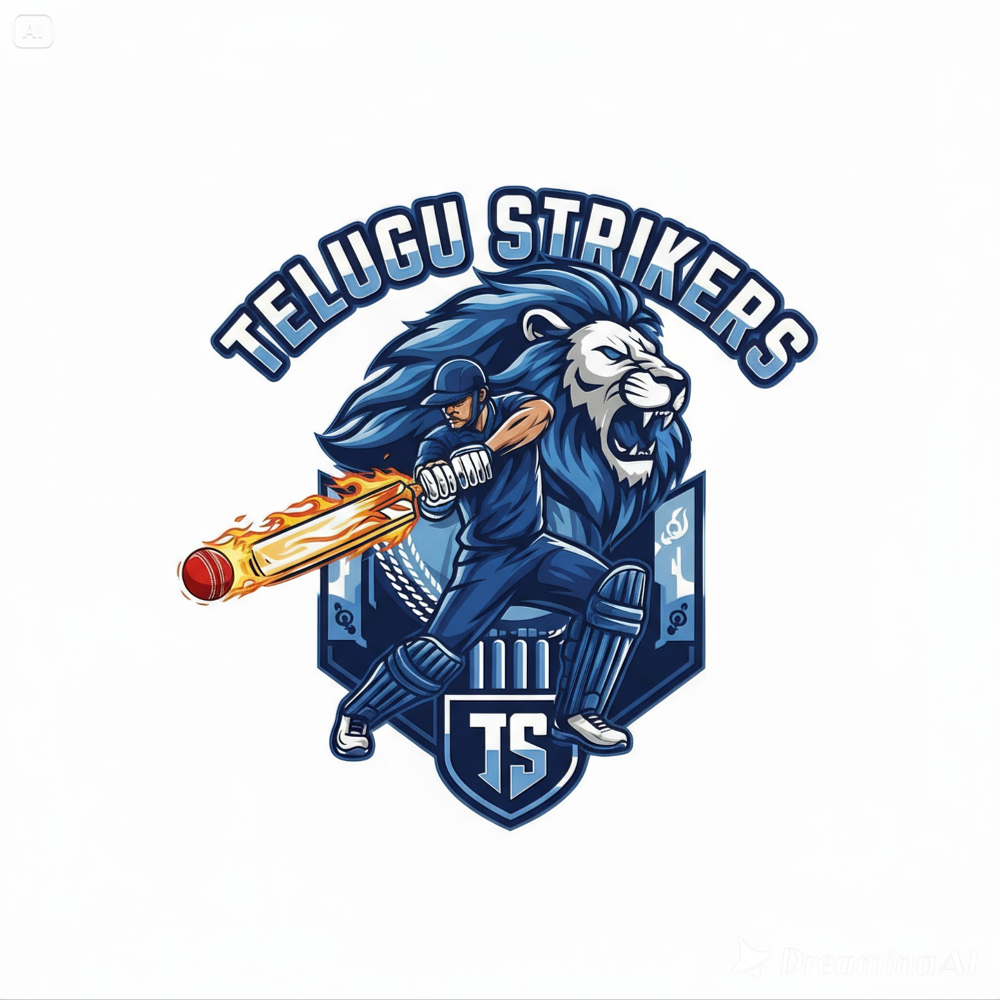
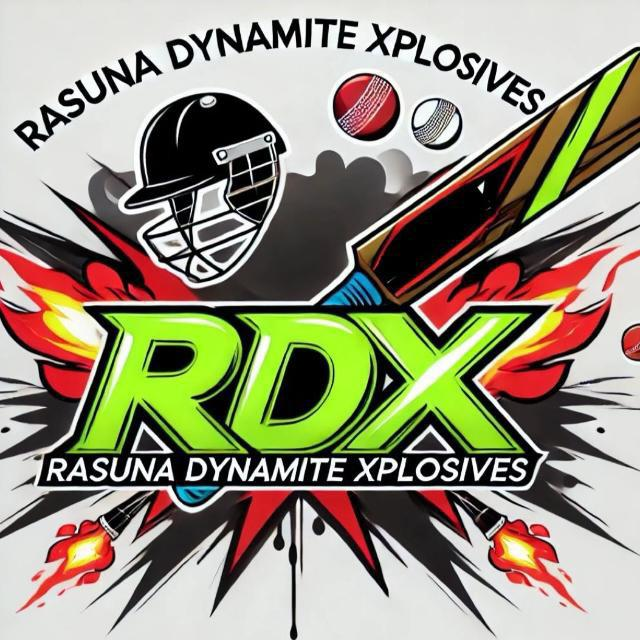
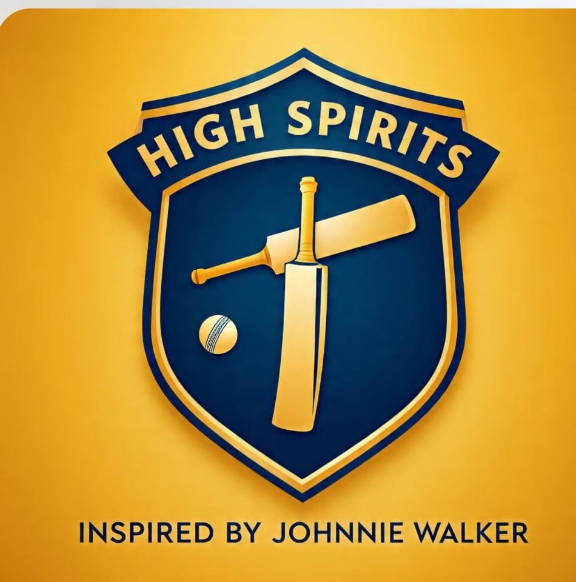
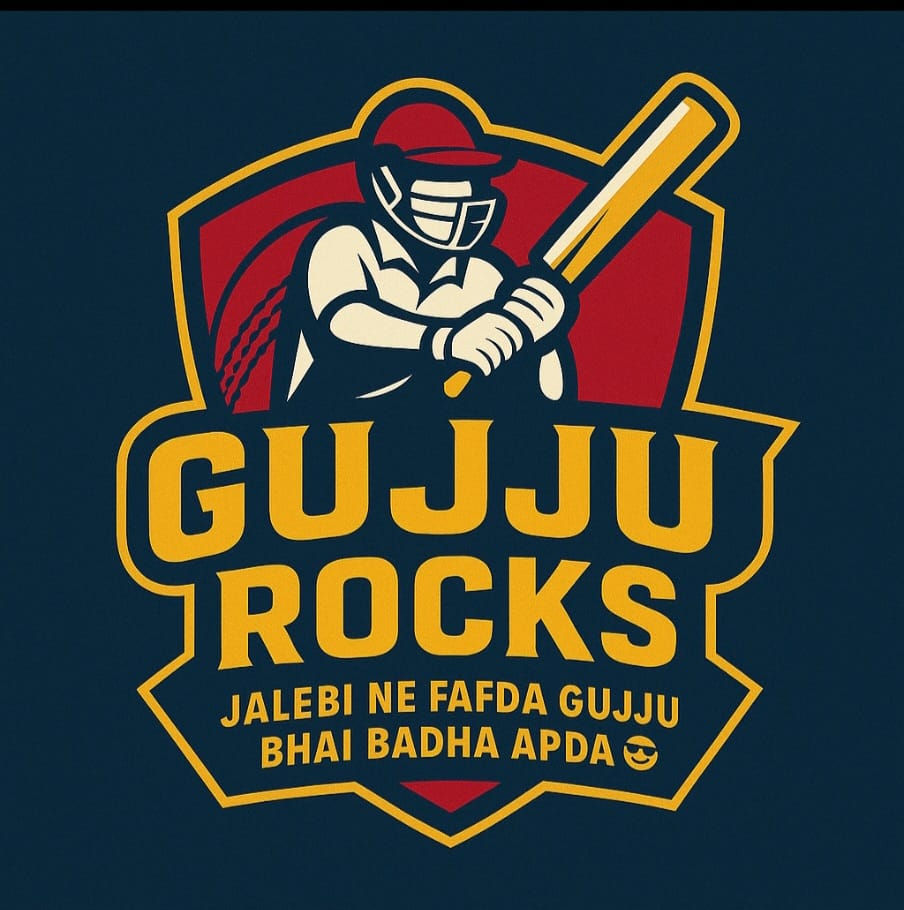
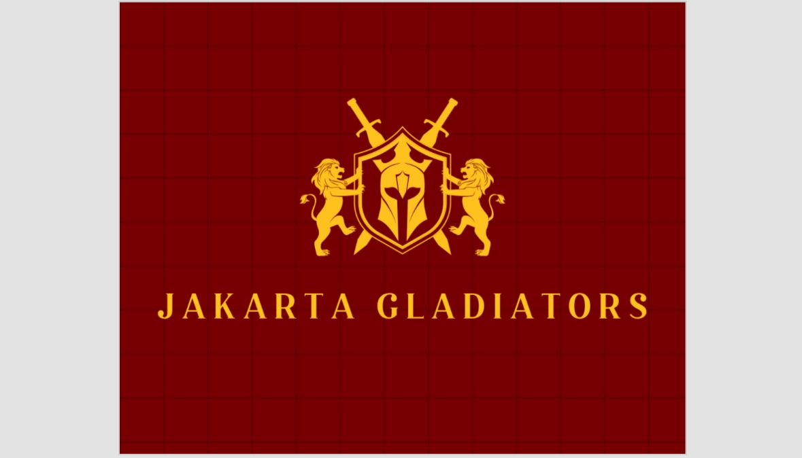
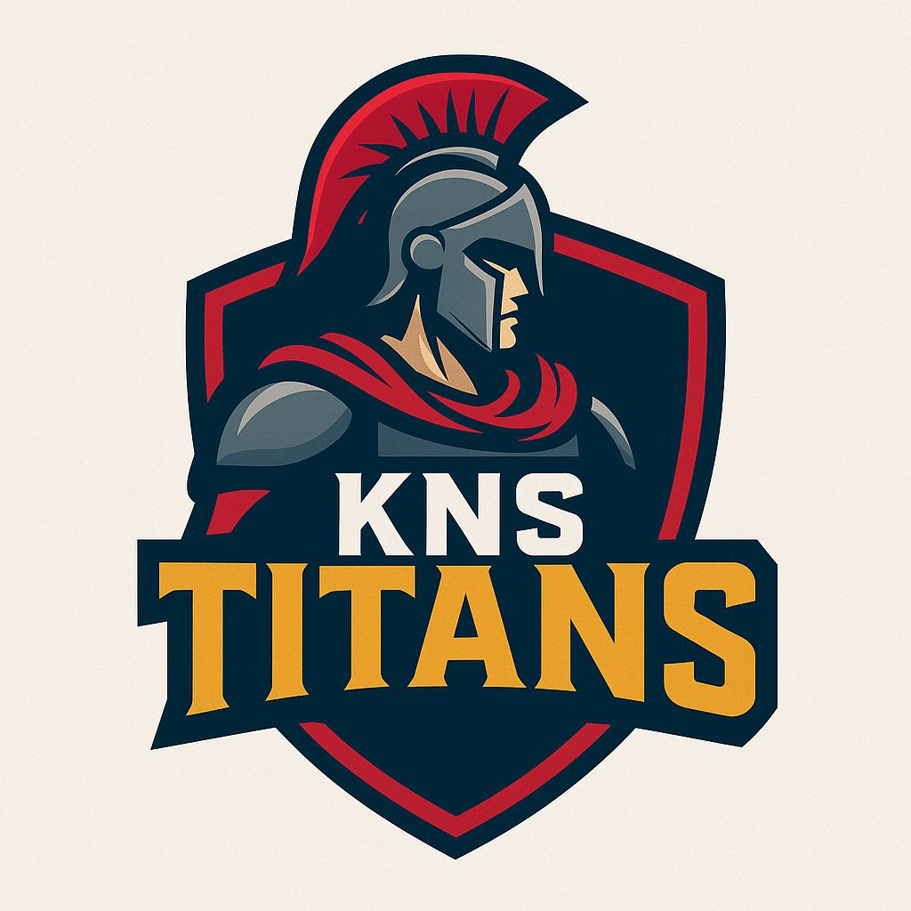
Final group standings as shown in the tournament record.
| # | Team | M | W | L | D | T | NR | NRR | For | Against | Pts | Last 5 |
|---|---|---|---|---|---|---|---|---|---|---|---|---|
| 1 | Rasuna Dynamite Xplosives – RDX | 3 | 3 | 0 | 0 | 0 | 0 | 5.531 | 370/22.3 | 251/23 | 6 | W-W-W |
| 2 | Telugu Strikers | 3 | 2 | 1 | 0 | 0 | 0 | -3.001 | 259/21.5 | 327/22 | 4 | W-L-W |
| 3 | KNS Titans | 3 | 1 | 2 | 0 | 0 | 0 | -0.293 | 305/22 | 302/21.2 | 2 | L-W-L |
| 4 | High Spirits | 3 | 0 | 3 | 0 | 0 | 0 | -2.348 | 300/23 | 354/23 | 0 | L-L-L |
| # | Team | M | W | L | D | T | NR | NRR | For | Against | Pts | Last 5 |
|---|---|---|---|---|---|---|---|---|---|---|---|---|
| 1 | Udupi Sunshine Cricket Club | 3 | 3 | 0 | 0 | 0 | 0 | 4.897 | 416/22.1 | 319/23 | 6 | W-W-W |
| 2 | Powerhouse XI | 3 | 2 | 1 | 0 | 0 | 0 | 7.496 | 424/21 | 256/20.1 | 4 | W-L-W |
| 3 | Jakarta Gladiators | 3 | 1 | 2 | 0 | 0 | 0 | -2.773 | 306/22 | 367/22 | 2 | L-W-L |
| 4 | Gujju Rocks | 3 | 0 | 3 | 0 | 0 | 0 | -9.273 | 237/22 | 441/22 | 0 | L-L-L |
Match scores and outcomes transcribed from the supplied tournament screenshots.
Top five performers in each category, based on the player-statistics screenshots provided.
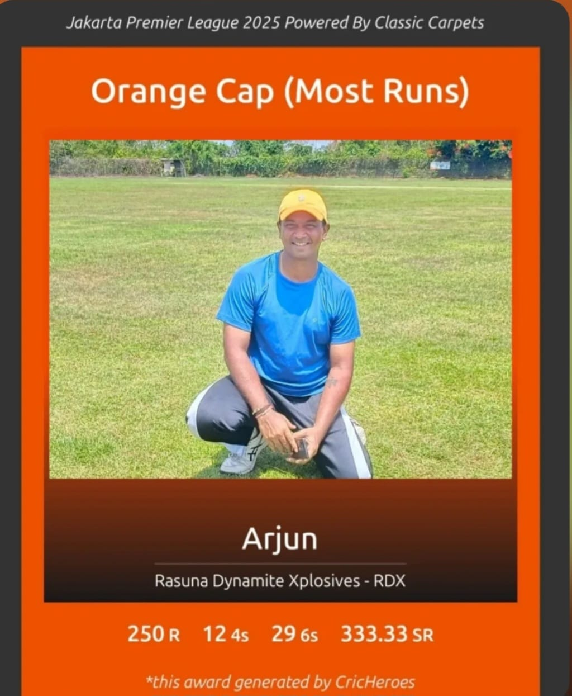
Rasuna Dynamite Xplosives – RDX
250 runs · 333.33 strike rate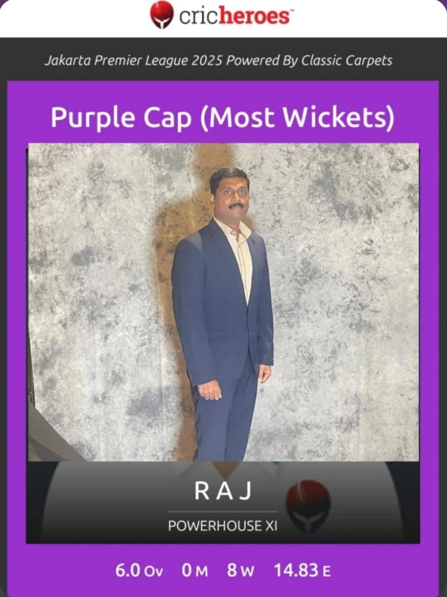
Powerhouse XI
8 wickets · Economy 14.83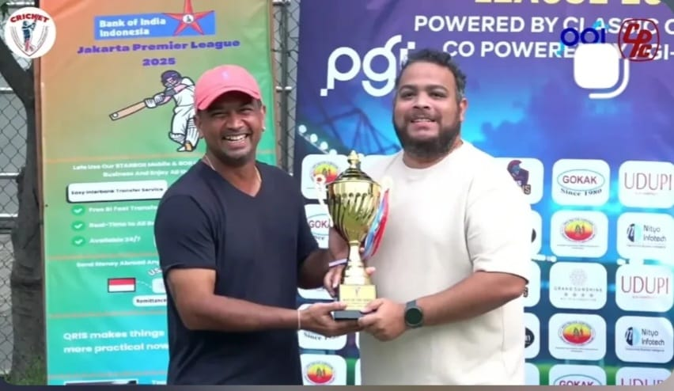
Season 1 · Man of the Series
| # | Player | Team | Innings | Runs | Average | Strike Rate |
|---|---|---|---|---|---|---|
| 01 | Arjun | RDX | 4 | 250 | 83.33 | 333.33 |
| 02 | Syed Kabir | Udupi Sunshine | 5 | 187 | 62.33 | 322.41 |
| 03 | Sakthi Seelan | Powerhouse XI | 5 | 170 | 170.00 | 309.09 |
| 04 | Ashraf | Powerhouse XI | 5 | 166 | 33.20 | 307.41 |
| 05 | Kirubasankar Coimbatore Ramamoorthy | Powerhouse XI | 3 | 140 | 46.67 | 350.00 |
| # | Player | Team | Innings | Wickets | Economy | Average | Dots |
|---|---|---|---|---|---|---|---|
| 01 | RAJ | Powerhouse XI | 4 | 8 | 14.83 | 11.13 | 19 |
| 02 | Prabhath | Udupi Sunshine | 5 | 6 | 9.38 | 12.50 | 18 |
| 03 | Satya Narayana Gorla | Telugu Strikers | 4 | 6 | 14.29 | 16.67 | 19 |
| 04 | Dhanesh Shetty | Udupi Sunshine | 5 | 5 | 13.62 | 21.80 | 20 |
| 05 | Nandha | Powerhouse XI | 5 | 4 | 11.56 | 26.00 | 24 |
| # | Player | Team | Matches | Dismissals | Catches | Run-outs |
|---|---|---|---|---|---|---|
| 01 | Harish Selavaganesan | RDX | 4 | 9 | 2 | 2 |
| 02 | Syed Kabir | Udupi Sunshine | 5 | 7 | 3 | 0 |
| 03 | Hari Challengers | Powerhouse XI | 5 | 7 | 6 | 1 |
| 04 | Nandha | Powerhouse XI | 5 | 4 | 4 | 0 |
| 05 | Hemant Chand | KNS Titans | 3 | 3 | 3 | 0 |
| # | Player | Team | MVP Points |
|---|---|---|---|
| 01 | Arjun | RDX | 27.183 |
| 02 | Syed Kabir | Udupi Sunshine | 22.222 |
| 03 | Nandha | Powerhouse XI | 19.550 |
| 04 | Ashraf | Powerhouse XI | 19.449 |
| 05 | Sampath Kumar | Udupi Sunshine | 18.417 |
Our appreciation to the organisations and businesses that supported the inaugural Jakarta Premier League.

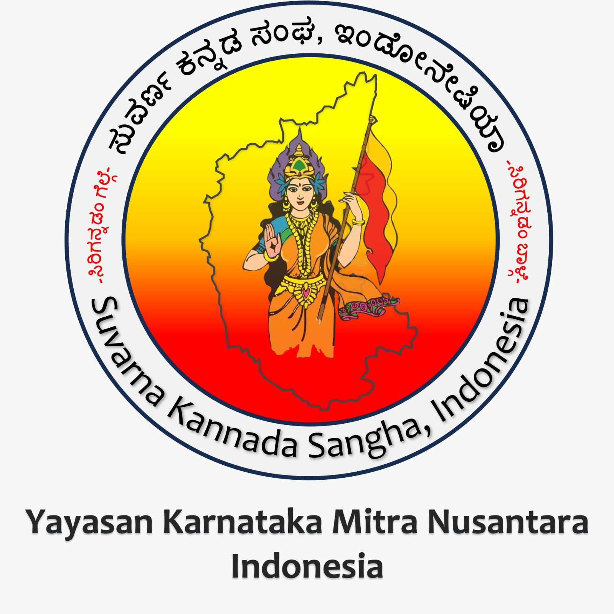